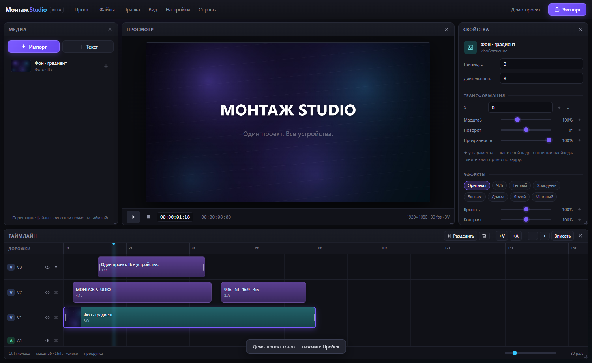

Многодорожечный таймлайн
Видео, аудио и текст на отдельных дорожках. Запрет наложений, перетаскивание, разделение и вставка на плейхеде.
Видеоредактор · Windows и Android
Полноценный видеоредактор без подписок и интернета. Многодорожечный таймлайн, эффекты, ключевые кадры с кривыми, автосубтитры прямо на устройстве и экспорт MP4.

Видео, аудио и текст на отдельных дорожках. Запрет наложений, перетаскивание, разделение и вставка на плейхеде.
Готовые пресеты: Ч/Б, тёплый, холодный, винтаж, драма, яркий, матовый. Яркость, контраст, насыщенность, оттенок и размытие.
Анимация положения, масштаба, поворота и прозрачности. Плавные кривые с редактируемыми точками — как в профессиональных редакторах.
Распознавание речи на устройстве через whisper.cpp. Без облака и подписок, с редактором текста и времени и импортом/экспортом SRT.
H.264 + AAC в MP4 прямо из приложения. На Windows используется встроенный FFmpeg, на Android — сохранение в «Загрузки».
Проект сохраняется автоматически и восстанавливается после перезапуска. Можно выключить в настройках.
16:9, 9:16, 1:1, 4:5, 4:3, 21:9. Вертикальные проекты для Reels и Shorts, горизонтальные — для YouTube.
Ни аккаунта, ни загрузок на сервер. Медиа, модели и проекты остаются на вашем устройстве.
Распакованный дистрибутив одним файлом. Запускается сразу, ничего не устанавливает.
Скачать для Windowsb461c5340e91590a4591690ca439f5073362c1becad33e297be8abbfc8d357e0
Для телефонов и планшетов на arm64. Автосубтитры работают на устройстве, без интернета.
Скачать для Android882765df29e7304cede445d7f89fd1578df3f1d1cf65e5f73f83d98bd9c03a73
Сборки от 11 ноября 2026. Все версии можно найти в разделе релизов.